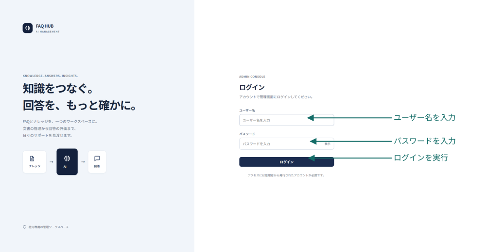
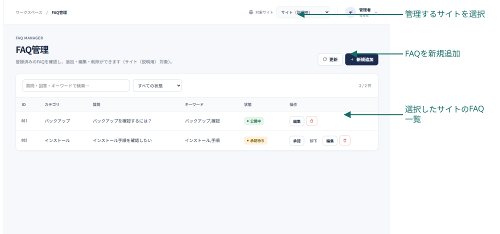
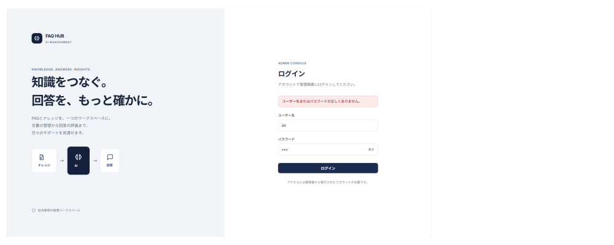

始める前に
「 セットアップ」を完了し、PostgreSQL・Ollama・Backend・Frontendを起動してください。ログイン用のユーザー名とパスワードも用意します。
アカウントの入力
http://localhost:5173/admin/loginを開く → ユーザー名・パスワードを入力 → ログイン → 確認中…

ログイン結果
入力が正しい → FAQ管理を開く。入力が誤っている → ログイン画面にエラーを表示。

入力が誤っている場合は、ログイン画面にエラーを表示します。

ログアウト
- 管理画面の右上にあるアカウント名を押します。
- ログアウトを選択します。
確認すること
ログイン画面に戻ります。管理操作を続ける場合は、再度ログインしてください。